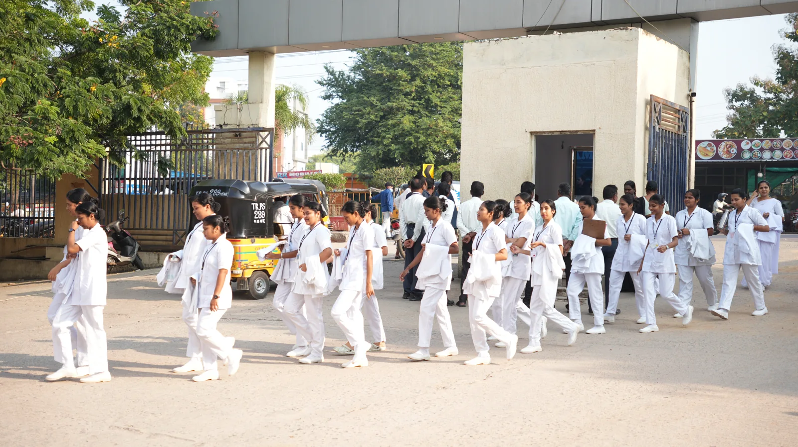

Research supervision
The Scientific & Research Advisory Committee supports faculty, postgraduate and student research, dissertations and project review.
Ethical review
Institutional Ethics and Institutional Animal Ethics Committees are listed for the relevant forms of research review. For committee registration, membership and approval documents, please refer to the official college records.
Research outputs
For current publications, grants and research projects, contact the academic office.
Academic development
The Medical Education Unit supports faculty development and teaching methods. The curriculum and college council committees help coordinate academic planning.

Still have a question?
Talk to someone at SVS
Call the college office on 08542-227902 or email svsmc_mbnr@yahoo.co.in. We’ll point you to the right person.